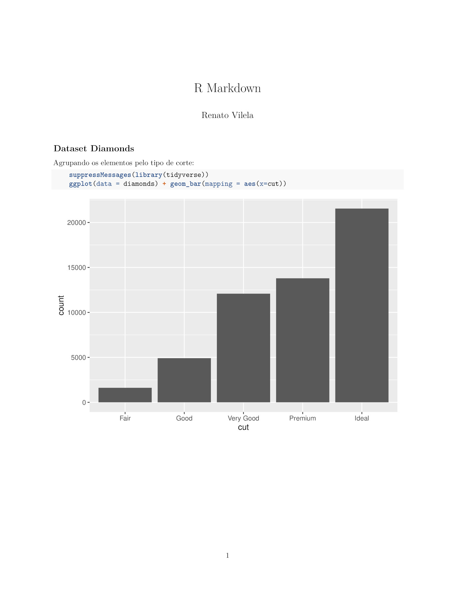

R Markdown permite a utilização de R na criação de documentos com Markdown. Para sua utilização é necessário o pacote rmarkdown, que pode ser instalado da seguinte forma:
> install.packages('rmarkdown')A extensão de uma aquivo R Markdown é rmd. Irei criar um arquivo de demonstração utilizando o terminal e o vim como editor.
$ touch example.rmd
$ vim example.rmdO preâmbulo pode ser da seguinte forma:
---
title: Markdown com R
author: Renato Vilela
output: pdf_document
---O tipo de arquivo de saída será pdf, pois foi definido no output. O padrão é html.
Utilizarei o dataset diamonds, obtido na instalação do pacote ggplot2, na demostração.
## Dataset Diamonds
Agrupando os elementos pelo tipo de corte:
```{r}
suppressMessages(library(tidyverse))
ggplot(data = diamonds) + geom_bar(mapping = aes(x=cut))
```Para gerar o arquivo de saída basta utilizar o seguinte comando:
$ Rscript -e "rmarkdown::render('example.rmd')"E o resultado será o seguinte:

Figura 1: R Markdown.